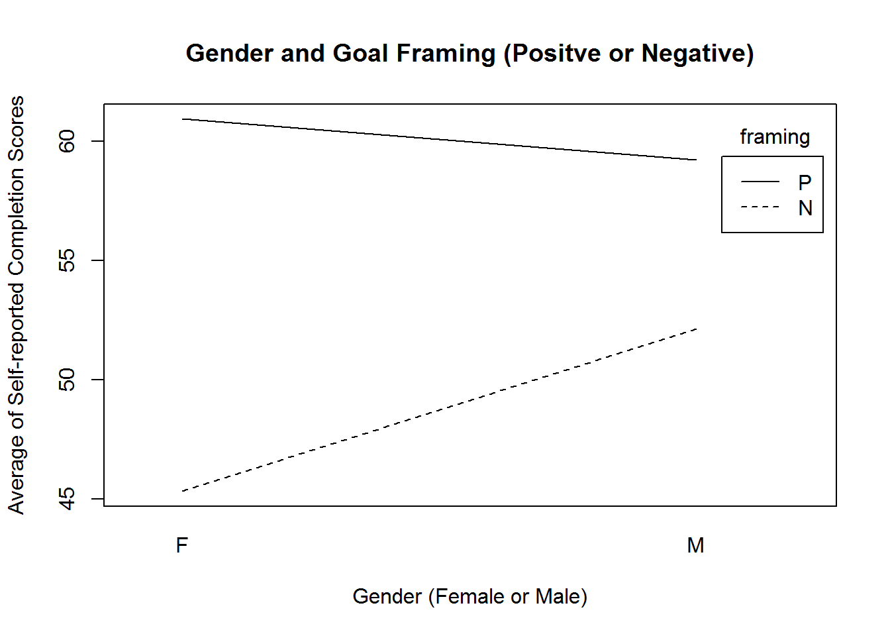
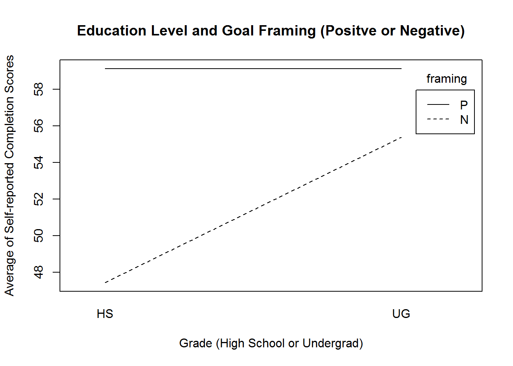

1.Summary of Average Self-reported Success Scores
Data is from a study by Dontre (2018)
library(dplyr)
library(readr)
Survey_rescored_data_v2 <- read_csv("Survey_rescored_data_v2.csv")
View(Survey_rescored_data_v2)
all_data = Survey_rescored_data_v2
data_gender <- all_data %>%
filter(Framing != "Neutral") %>%
filter(Gender != "other") %>%
group_by(Framing, Gender) %>%
summarise(Avg_Score = mean(na.omit(Score)))
knitr::kable(data_gender)
| Negative |
Female |
45.31579 |
| Negative |
Male |
52.11905 |
| Positive |
Female |
60.92537 |
| Positive |
Male |
59.22222 |
data_edu <- all_data %>%
filter(Framing != "Neutral") %>%
filter(Grade != "OT") %>%
filter(Grade != "PG") %>%
group_by(Framing, Grade) %>%
summarise(Avg_Score = mean(na.omit(Score)))
knitr::kable(data_edu)
| Negative |
HS |
47.44444 |
| Negative |
UG |
55.37838 |
| Positive |
HS |
59.11364 |
| Positive |
UG |
59.13084 |
2. Main Effects and Interaction of Gender and Goal Framing
There is an interaction effect that show male and females report goal success in opposite directions depending on their goal expectations.
gender = data_gender$Gender
framing = data_gender$Framing
score = data_gender$Avg_Score
interaction.plot(gender,framing,score,
leg.bty = "o",
main = "Gender and Goal Framing",
xlab = "Gender",
ylab = "Average of Self-reported Completion Scores")

3. Main Effects and Interaction of Education Level and Goal Framing
There is an interaction effect which suggests when a goal is framed negatively, the odds of success are better at higher grade levels.
education = data_edu$Grade
score = data_edu$Avg_Score
interaction.plot(education,framing,score,
leg.bty = "o",
main = "Education Level and Goal Framing",
xlab = "Grade (High School or Undergrad)",
ylab = "Average of Self-reported Completion Scores")

Reference 1
Dontre, Alexander. (2018). To Frame or Not to Frame - Improving Goal Setting
Data sourced from https://osf.io/5m2g8/
4. Components Analysis for Behavioral Profile
Data based on studies by Amrieh(2015) and Amrieh(2016)
Pdf of Results in 2nd Link Asset
The Simplex identifies that students in IT and French vary the most in their behavioral profile. Students in IT tend to have more discussion in class while students in French tend to use more of their school resources
library(InPosition)
library(prettyGraphs)
data <- read.csv("Edu_behavior_profile.csv",header=TRUE)
rownames(data)<- data[,1]
data <- data[,-1]
res = epCA.inference.battery(DATA = data,symmetric = FALSE)
# Coordinates
rows.score = res$Fixed.Data$ExPosition.Data$fi
rows.cont = res$Fixed.Data$ExPosition.Data$ci
rownames(rows.score) = rownames(data)
cols.score = res$Fixed.Data$ExPosition.Data$fj
cols.cont = res$Fixed.Data$ExPosition.Data$cj
rownames(cols.score) = colnames(data)
prettyPlot(cols.score,x_axis=1,y_axis=2,col=NULL,pch=NULL,cex=NULL,text.cex=0.4,
pos=3,xlab="",ylab="",
main="Simplex Behavioral Profile vs. Class Topic",display_names=TRUE,display_points=TRUE,
constraints=NULL,contributionCircles=TRUE,contributions=cols.cont,axes=TRUE,
fg.line.width=3,fg.type="l",fg.col="black",
bg.line.width=1.5,bg.lty=3,bg.col="black",
flip=FALSE,asp=1,findBounds=TRUE,dev.new=TRUE,new.plot=TRUE)
prettyPlot(rows.score,x_axis=1,y_axis=2,col="Red",pch=NULL,cex=1,
text.cex=c(.3,.3,.3,.3,1,.3,.3,1,.3,.3,.3,.3),
pos=3,xlab="",ylab="",
main="Simplex Behavioral Profile vs. Class Topic",display_names=TRUE,display_points=TRUE,
constraints=NULL,contributionCircles=TRUE,contributions=rows.cont,axes=TRUE,
fg.line.width=3,fg.type="l",fg.col="black",
bg.line.width=1.5,bg.lty=3,bg.col="black",
flip=FALSE,asp=1,findBounds=TRUE,dev.new=FALSE,new.plot=FALSE)
Reference 2
Data sourced from https://www.kaggle.com/aljarah/xAPI-Edu-Data
Abdi, H. & Williams, L.J. (2010). Correspondence analysis. In N.J. Salkind, D.M., Dougherty, & B. Frey (Eds.): Encyclopedia of Research Design. Thousand Oaks (CA): Sage. pp. 267-278.
Amrieh, E. A., Hamtini, T., & Aljarah, I. (2016). Mining Educational Data to Predict Student’s academic Performance using Ensemble Methods. International Journal of Database Theory and Application, 9(8), 119-136.
Amrieh, E. A., Hamtini, T., & Aljarah, I. (2015). Preprocessing and analyzing educational data set using X-API for improving student’s performance. In Applied Electrical Engineering and Computing Technologies (AEECT), 2015 IEEE Jordan Conference on (pp. 1-5). IEEE.
Beaton, D., Chin Fatt C.R., & Abdi, H. (2014). An ExPosition of multivariate analysis with the Singular Value Decomposition in R. Computational Statistics & Data Analysis, 72, 176-189.